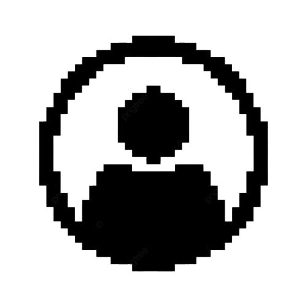
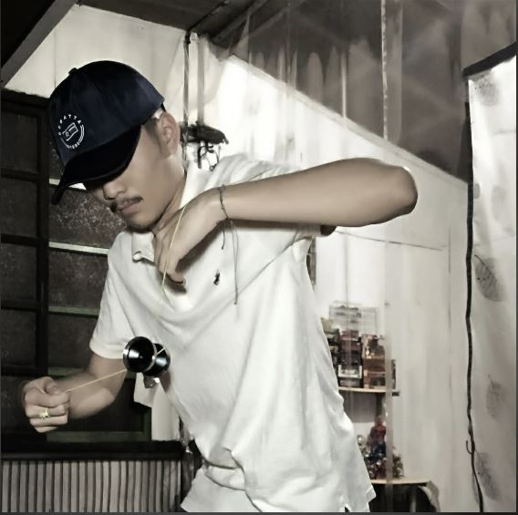
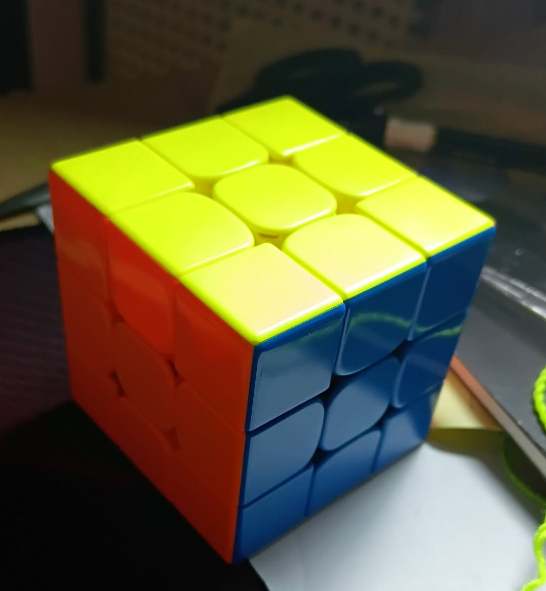
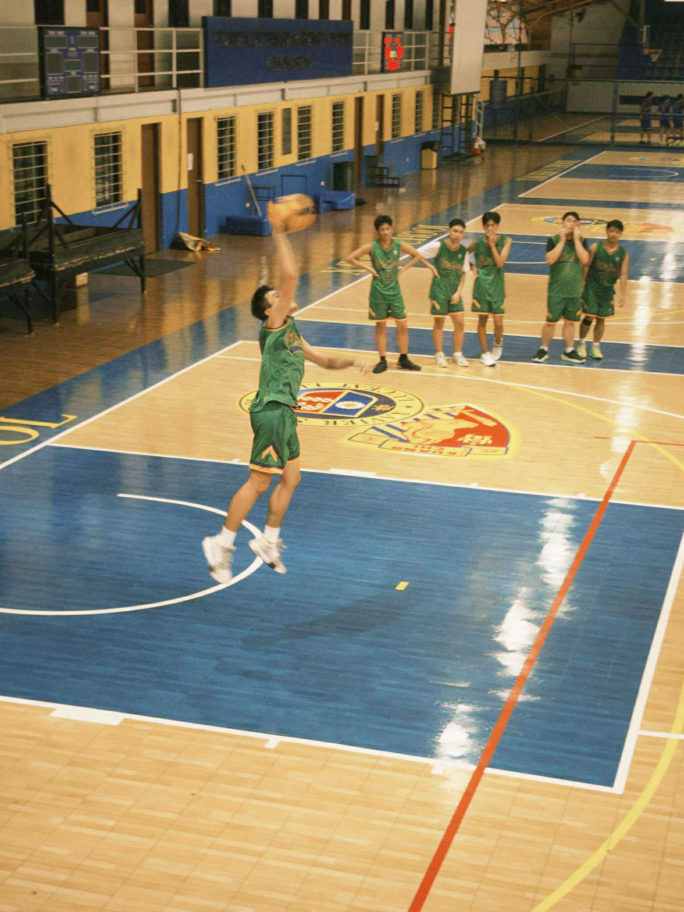
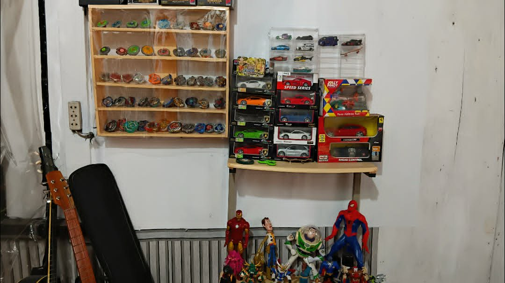

The one and only

Hi! My name is Joss Adrian M. Alcantara I am currently 17 years old born on September 6, 2008. I study at Notre Dame of Greater Manila or NDGM for short. I enjoy a variety of things which are a bit obscure such as playing with the yo-yo, making music, drawing pixel art, and now coding. With music I play with the bass and guitar and have a music channel called Gears of Fate. I am a member of the NDGM volleyball varsity team for 3 years now played both middle blocker and outside hitter. I am also a member of the publication group winning multiple journalism awards but nothing too crazy.
Interests
Favorite Arists and Songs
Achievements



